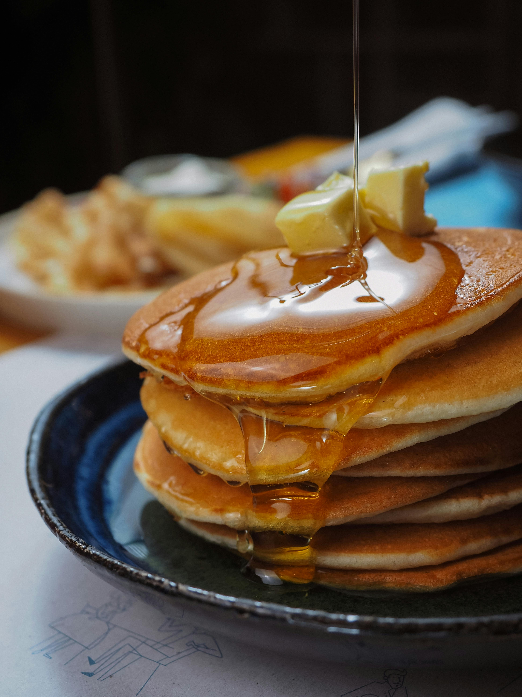

Home
Good Old-Fashioned Pancakes

Description
Good old-fashioned pancakes like the kind you used to have when you were a kid. Perfect for when you're feeling nostalgic and hungry at the same time.
Ingredients
- Flour
- Baking Powder
- Sugar
- Salt
- Milk
- Butter
- Egg
Steps
- Sift the dry ingredients together well.
- Make a well, then add the wet ingredients. Stir to combine.
- Scoop the batter onto a hot griddle or pan.
- Cook for two to three minutes, then flip.
- Continue cooking until brown on both sides. Serve warm.